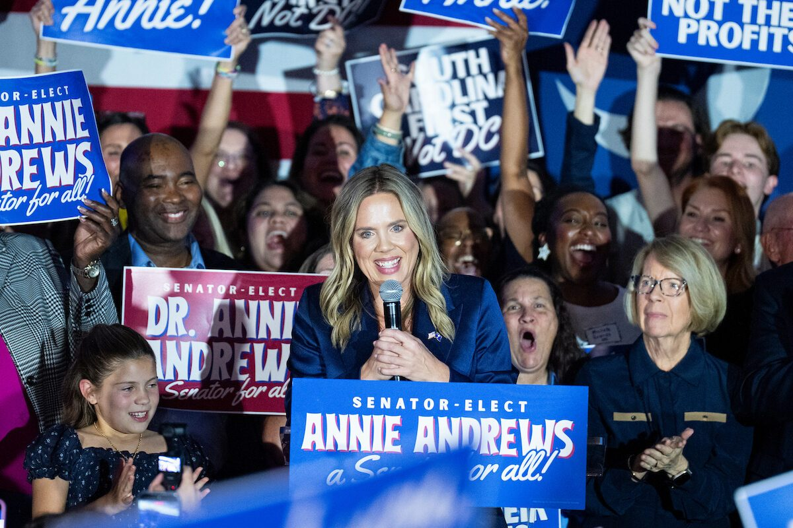

Demokraterne vinder også Senatet – med sejre i Texas, Kansas og South Carolina
Partiet har mindst 54 af 100 pladser i Senatet efter at have vundet syv republikanske pladser, og har nu flertal i begge kamre Kongressen består af Repræsentanternes Hus og Senatet. Med flertal i begge kan Demokraterne bestemme, hvilke love der kommer til afstemning, og hvilke undersøgelser der sættes i gang. i Kongressen.

Ifølge NBC og CBS står Demokraterne til 54 pladser mod Republikanernes 44, mens Alaska og Mississippi endnu ikke er afgjort. Partiet vandt pladser i Texas, Kansas, South Carolina, Maine, Iowa, Ohio og North Carolina.
I Texas slog James Talarico Ken Paxton med 55 mod 43 procent og bliver den første demokrat valgt til Senatet fra delstaten siden 1988. Præsten Adam Hamilton er den første demokrat fra Kansas i 94 år, og i Maine tabte Susan Collins efter 30 år i Senatet. I Texas vandt demokraten Gina Hinojosa også guvernørposten fra Greg Abbott.
Senatets demokratiske leder Chuck Schumer lover Trump »lovgivningsmæssig pigtråd«. Vicepræsident JD Vance gav Iran-krigen skylden for nederlaget. De nye medlemmer tiltræder i januar.
Kilde: AP · Læs mere →